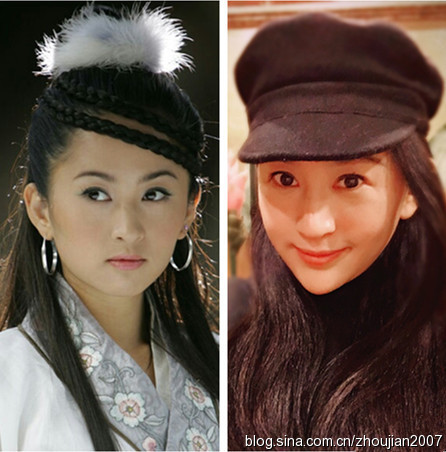

《爸爸2》启程 揭“新爸爸”婚姻及家庭背景
发表时间：2016-02-14 08:51:49
《爸爸去哪儿》第二季嘉宾名单最终确认，原本5对星爸星娃全部被换掉，“新爸爸”为陆毅、曹格、黄磊、杨威和吴镇宇，与此前盛传的名单一直。同时，“爸爸2”的第一段行程已于5月11日在重庆武隆县开拍。
《爸爸去哪儿》第二季终于开拍了“新爸爸”为陆毅、曹格、黄磊、杨威和吴镇宇。五位奶爸分跨各界，五位萌娃也更有担当。萌太子非杨威儿子莫属，清纯女神非陆毅女儿首当其冲，精灵宝贝黄磊爱女是不二人选，潮范正太吴镇宇儿子毫无压力，喜感天后有且仅有曹格家闺女了。
福利总是有的，陆大帅哥终于不再沉溺于与小家的幸福生活，大踏步复出了，同时带上了自家闺女。陆毅家闺女叫小贝儿，今年6岁了。瞧这幸福的一家子，父母是绝对的夫妻相，闺女是绝对的继承了优良基因，正是爸妈是真爱，孩子生的赞啊。
陆毅家闺女身材修长，五官端正，眼睛灵动，鼻子挺拔有型，牙齿皓白整齐，从形体上看绝对是未来明星的好苗子。陆毅2006年和鲍蕾结婚。2008年陆毅和鲍蕾的女儿出生。陆毅和鲍蕾被赞为娱乐圈的模范夫妻，是典型的金童玉女。两人大学的时候就确定了恋爱关系。鲍蕾回忆初见陆毅时的场景就如电影一般，是在排队领宿舍钥
专题 > 娱乐
十年！06版《神雕侠侣》十位美女现状
金庸先生作品改编的电视剧是被翻拍次数最多的，《射雕英雄传》、《倚天屠龙记》、《鹿鼎记》、《笑傲江湖》、《天龙八部》、《神雕侠侣》等等，每个年代大多都有自己的版本。说到《神雕侠侣》，观众印象比较深刻的像古天乐、李若彤版，刘德华、陈玉莲版，任贤齐、吴倩莲版、李铭顺、范文芳版。黄晓明和刘亦菲那版很多人觉得没多长时间，其实播出到现在也已经十年了。这部戏也让刘亦菲和黄晓明名声大噪，跻身一线演员的行列。
金庸武侠剧，除了侠肝义胆之外，也有儿女情长；有风流潇洒的大侠，也有人见犹怜的美女。06版《神雕侠侣》中，也不乏很多漂亮的女演员。十年过去了，如今的她们有的大红大紫，有的一直没红；有的当妈妈了，有的依然单身；有人嫁入豪门，也有人嫁给草根，可谓是“同剧不同命”。
娱乐圈有“仙气”的女演员并不多，刘亦菲算一个。虽然入行后就接拍了《金粉世家》和《仙剑奇侠传》，但是《神雕侠侣》后刘亦菲才真正爆红步入一线，还有了“神仙姐姐”的美誉。近年来她主攻大银幕，主演了《功夫之王》、《倩女幽魂》、《四大名捕》、《铜雀台》等电影，稳居一线花旦之列，封面代言不断。和韩国欧巴宋承宪的爱情也相当甜蜜，两个人还合作了一部《第三种爱情》。

虽然在《神雕侠侣》里，跛脚的”陆无双“并不是一个太讨喜的角色，但是她的扮演者杨蕊还是受到很多观众的喜爱，扮相太美了。娱乐圈长得漂亮却不红的女演员很多，陈紫函是，杨蕊也绝对算一个。近年来，她主演了《一触即发》、《浣花洗剑录》、《华胥引》、《铁血尖刀》、《杀出黎明》等剧，可惜还是没火起来。14年，杨蕊和比自己大三岁的男演员邵彤领证。不久前，刚刚低调当妈妈了，祝福她。